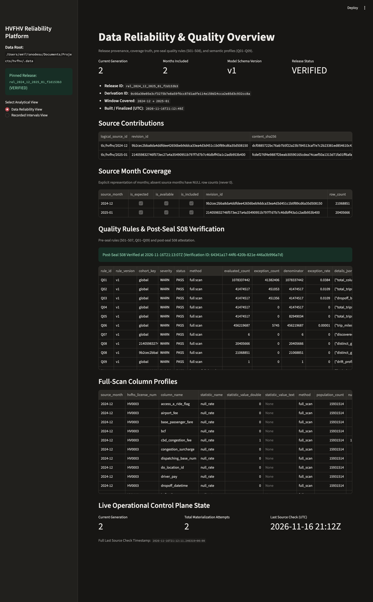

HVFHV Monthly Data Reliability Platform
A single-machine batch data engineering platform built over official NYC TLC High-Volume For-Hire Vehicle trip datasets — combining immutable content-addressed Parquet acquisition, native DuckDB transformations, atomic SQLite compare-and-swap (CAS) releases, Dagster asset lineage, and a read-only Streamlit console without cloud overhead.
System Architecture & Reliability Guarantees
Designed around strict separation between raw evidence, analytical compilation, publication authority, and read-only consumption.
CHECKPOINT zero-WAL seal, SHA-256 manifest, SQLite CAS generation swap & Option A retention.
SQLite CAS Publication Authority
SQLite (DELETE journal, synchronous=EXTRA, FK enforcement) atomically promotes verified releases via expected_parent, expected_generation, and idempotent operation_key. POSIX fcntl.flock serializes writers and bounds readers.
Option A Storage Retention (ADR 0006)
12-month projections showed 4 full DuckDB snapshots (~98.13 GiB) would breach the 80 GiB workstation cap. Option A retains current + 1 prior verified database while keeping immutable raw Parquet files and JSON manifests for deterministic rebuilds.
24 → 25 Column Schema Evolution
Bridges the 2025 NYC Congestion Relief Zone fee introduction explicitly with cbd_fee_field_present so pre-2025 NULL entries in 2024-12 are never silently coerced into $0.00 alongside 2025-01 records.
Exact Type 7 Quantiles & Partition
Evaluates exact p50 and p95 via DuckDB quantile_cont over microsecond integer deltas without subgroup percentile averaging, preserving total = eligible_nonnegative + negative_recorded_interval + missing_timestamp.
UI & Lineage Preview
Captured directly from the local Streamlit analytical console and Dagster webserver running against the published 41.47M-row release (rel_2024_12_2025_01_f2d153b3).
Provenance metadata, source month coverage truth, Post-Seal S08 attestation banner, quality rules Q01–Q09, full-scan column profiles, and live SQLite control-plane state.

Verified Real-Data Benchmarks
Measured end-to-end on official NYC TLC releases (fhvhv_tripdata_2024-12.parquet, fhvhv_tripdata_2025-01.parquet, and taxi_zone_lookup.csv).
| Metric / Stage | Release 1 (2024-12 Slice) |
Release 2 (2024-12 + 2025-01 Window) |
|---|---|---|
| Total Trips Ingested | 21,068,851 |
41,474,517 |
| Interval Partition | 20,817,586 eligible / 251,265 neg / 0 miss |
41,023,464 eligible / 451,053 neg / 0 miss |
| Eligible Quantiles (Type 7) | p50 = 268.0s / p95 = 716.0s |
p50 = 249.0s / p95 = 666.0s |
| Build Wall Time | 20.61s |
32.63s (incremental) |
| Peak Writer RSS (≤ 8,192 MB) | 6,227.20 MB |
7,634.23 MB |
| DuckDB Artifact Size | 992.76 MiB (0 WAL, 0 spill) |
1,957.76 MiB (0 WAL, 0 spill) |
| Total Project Footprint | — | 20.75 GiB (59.25 GiB headroom under 80 GiB) |
| Consumer Cold Query Latency | — | 1.923s (headless ReleaseReader) |
S02 / Q06):
Across 20,405,666 trips in 2025-01, 14,105,454 recorded $0.00 and 6,300,212 recorded positive fees up to $3.00 (p95 = $1.50), while all 21,068,851 pre-2025 rows retain explicit NULL (cbd_fee_field_present = false).
Quickstart & Technical Documentation
Reproduce the locked Python 3.11–3.14 environment and verify all 229 automated tests locally:
git clone https://github.com/emilianodesu/nyc-mobility-data-platform.git cd nyc-mobility-data-platform python3 -m venv .venv && source .venv/bin/activate pip install -r requirements.lock && pip install --no-deps -e . pytest -q
- Architecture Overview System boundaries, SQLite control authority, and recovery model.
- ADR 0006 — Option A Retention Formal storage feasibility amendment enforcing the 80 GiB budget.
- Data & Quality Contracts Canonical schemas, interval math, and rules S01–S08 & Q01–Q09.
- Empirical Execution Log SHA-256 digests, telemetry, and test certifications across Gates G0–G6.